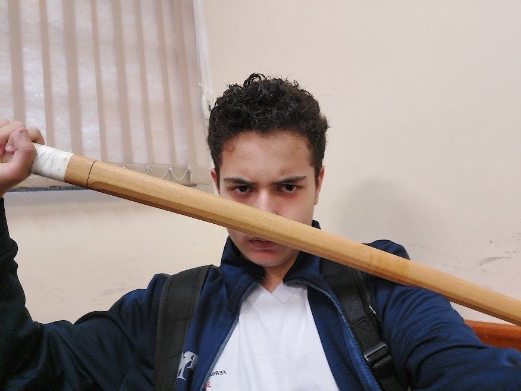
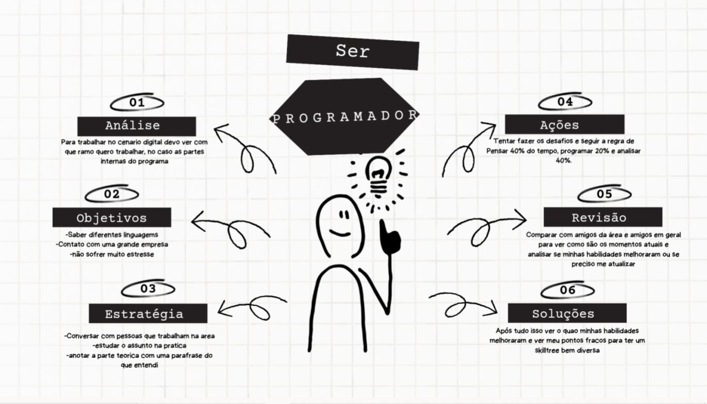
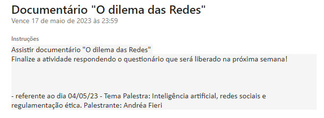
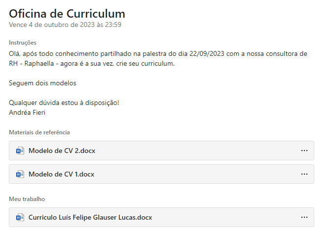
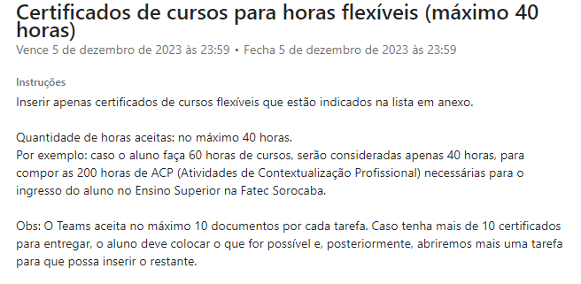

Este é meu avatar na internet, é um personagem de um jogo que gosto muito

este sou eu depois de gravar um clipe para uma atividade na escola
ㅤㅤㅤOlá! Meu nome é Luis Felipe Glauser Lucas, tenho 17 anos e sou apaixonado por jogos e computadores. Desde cedo, desenvolvi um grande interesse por tecnologia e tudo relacionado a ela. Sempre que possível, estou explorando novos jogos e aprendendo sobre hardware e software. Estudo na Etec Fernando Prestes no curso desenvolvimento de sistemas na extensão FATEC, minhas materias favoritas no curso atualmente é Banco de Dados e Planejamento e Desenvolvimento do Trabalho de Conclusão de Curso
Este é meu avatar na internet, é um personagem de um jogo que gosto muito
este sou eu depois de gravar um clipe para uma atividade na escola
ㅤㅤㅤTivemos alguns encontros durantes os dois primerios anos, nosso primeiro encontro que esta abaixo, ele foi a primeira vez que fomos fisicamente para alguma das empresas que participam do programa PTECH, foi muito divertido e acabamos vendo como era o ambiente dos funcionarios e tivemos a oportunidade de fazer perguntas a devs mais experientes, antes deste encontro tivemos uma reunião onde falamos sobre Etica, onde teve um questionario no final, eu consegui ficar em 1 lugar no questionario e ganhei um premio no final
Logo da eduzz em meio as plantas, uma das primeiras coisas que vimos
Uma logo bem legal, feito de bambus perto do riozinho

Cartinha da eduzz para os alunos, recebi uma extra por ter acertado as perguntas de etica

Foto do final do encontro, infelizmente não apareci pois tive que ir embora mais cedo ;|
ㅤㅤㅤA runião da Itix não foi realizada na sede da empresa como a eduzz, mas foi realizada na propria fatec nela vimos o criador da empresa e sua jornada desde o começo até mais recentemente, nesse conseguimos perceber como devemos ter dedicação porque ela sempre compensa

ㅤㅤㅤAlem dessas duas reuniões que tivemos, que foram preseciais, tivemos diversas reuniões online, as primeiras que tivemos inclusive, nelas debatemos sobre varios temas, etica, relacionamentos em trabalho, como fazer seu perfil profissional e como fazer seu curriculo
ㅤㅤㅤApresento as atividades propostas pelo Ptech para este curso. Cada lição representa uma oportunidade de aprendizado, e irei descrever minhas reflexões e soluções para cada uma delas.
essa é a atividade sobre o Plano de carreira, que é referente a palestra que tivemos com a Itix com a trajetoria de Carlos Santos, eu fiz um mapa mental de ser um programador
Após assistirmos o documentario Dilema das Redes tuvemos que responder um questionario sobre ele, porem atualmete as fotos desse questionario nao estao mais disponiveís então essa tela é o ultimo registro dessa atividade isso se repetira algumas vezes
Em uma das nossas varias reuniões tivemos uma aula sobre como fazer um curriculo, como ele deve estar para parecer apresentavél e alguns documentos para nos auxiliar
Esta não foi muito bem uma tividade, nos estavamos em falta de horas e eles liberaram alguns cursos para fazermos e e contabilizar para nossas horas, mas não tivemos nenhuma reunião e não falamos com nenhuma empresa